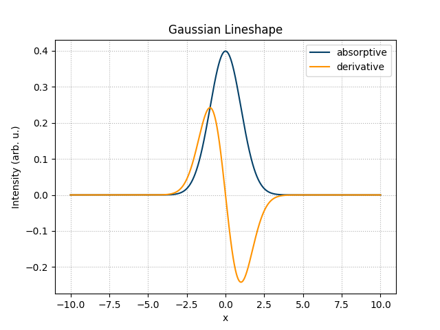
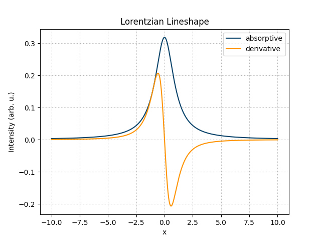
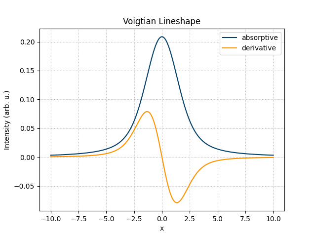
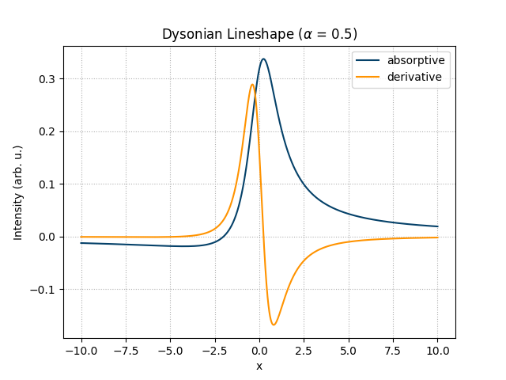
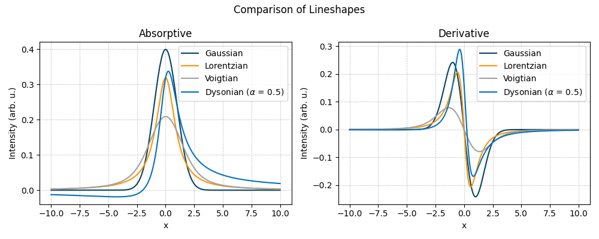

Note
Go to the end to download the full example code.
Lineshapes (#10)
This example demonstrates how to calculate the different lineshape functions
available in the SpinLab spinlab.math.lineshape module: the Gaussian,
Lorentzian, Voigtian, and Dysonian distributions.
import spinlab as sl
import numpy as np
from spinlab.math import lineshape
from spinlab.plotting.colors import (
primary1,
accent,
BrukerPacific,
BrukerOcean,
BrukerOrange,
BrukerDolomite,
)
Define a common x-axis and center/width parameters used for all lineshapes.
x = np.linspace(-10, 10, 2001)
x0 = 0.0 # center
gamma = 1.0 # Lorentzian width
sigma = 1.0 # Gaussian width
Gaussian
The Gaussian lineshape is calculated with spinlab.math.lineshape.gaussian().
Setting deriv=True returns its first derivative, which corresponds to the
lineshape recorded with field modulation.
y_gaussian = lineshape.gaussian(x, x0, sigma)
y_gaussian_deriv = lineshape.gaussian(x, x0, sigma, deriv=True)
sl.plt.figure()
sl.plt.plot(x, y_gaussian, color=primary1, label="absorptive")
sl.plt.plot(x, y_gaussian_deriv, color=accent, label="derivative")
sl.plt.xlabel("x")
sl.plt.ylabel("Intensity (arb. u.)")
sl.plt.title("Gaussian Lineshape")
sl.plt.legend()
sl.plt.grid(ls=":")
sl.plt.show()

Lorentzian
The Lorentzian lineshape is calculated with spinlab.math.lineshape.lorentzian().
Setting deriv=True returns its first derivative, which corresponds to the
imaginary part of a phased EPR spectrum.
y_lorentzian = lineshape.lorentzian(x, x0, gamma)
y_lorentzian_deriv = lineshape.lorentzian(x, x0, gamma, deriv=True)
sl.plt.figure()
sl.plt.plot(x, y_lorentzian, color=primary1, label="absorptive")
sl.plt.plot(x, y_lorentzian_deriv, color=accent, label="derivative")
sl.plt.xlabel("x")
sl.plt.ylabel("Intensity (arb. u.)")
sl.plt.title("Lorentzian Lineshape")
sl.plt.legend()
sl.plt.grid(ls=":")
sl.plt.show()

Voigtian
The Voigtian lineshape is the convolution of a Gaussian and a Lorentzian
distribution and is calculated with spinlab.math.lineshape.voigtian().
Setting deriv=True returns its first derivative (Gaussian-broadened
imaginary part of a phased spectrum).
y_voigtian = lineshape.voigtian(x, x0, sigma, gamma)
y_voigtian_deriv = lineshape.voigtian(x, x0, sigma, gamma, deriv=True)
sl.plt.figure()
sl.plt.plot(x, y_voigtian, color=primary1, label="absorptive")
sl.plt.plot(x, y_voigtian_deriv, color=accent, label="derivative")
sl.plt.xlabel("x")
sl.plt.ylabel("Intensity (arb. u.)")
sl.plt.title("Voigtian Lineshape")
sl.plt.legend()
sl.plt.grid(ls=":")
sl.plt.show()

Dysonian
The Dysonian lineshape is calculated with spinlab.math.lineshape.dysonian().
It mixes absorption and dispersion contributions through the asymmetry
parameter alpha, which is used to describe EPR/CESR lines from
conducting samples. alpha=0 reduces the Dysonian to a symmetric
Lorentzian. Setting deriv=True returns its first derivative.
alpha = 0.5
y_dysonian = lineshape.dysonian(x, x0, gamma, alpha)
y_dysonian_deriv = lineshape.dysonian(x, x0, gamma, alpha, deriv=True)
sl.plt.figure()
sl.plt.plot(x, y_dysonian, color=primary1, label="absorptive")
sl.plt.plot(x, y_dysonian_deriv, color=accent, label="derivative")
sl.plt.xlabel("x")
sl.plt.ylabel("Intensity (arb. u.)")
sl.plt.title(f"Dysonian Lineshape ($\\alpha$ = {alpha})")
sl.plt.legend()
sl.plt.grid(ls=":")
sl.plt.show()

Comparison
All four lineshapes plotted together for direct comparison, absorptive shapes on the left and their derivatives on the right.
fig, (ax_abs, ax_deriv) = sl.plt.subplots(1, 2, figsize=(10, 4))
ax_abs.plot(x, y_gaussian, color=BrukerPacific, label="Gaussian")
ax_abs.plot(x, y_lorentzian, color=BrukerOrange, label="Lorentzian")
ax_abs.plot(x, y_voigtian, color=BrukerDolomite, label="Voigtian")
ax_abs.plot(x, y_dysonian, color=BrukerOcean, label=f"Dysonian ($\\alpha$ = {alpha})")
ax_abs.set_xlabel("x")
ax_abs.set_ylabel("Intensity (arb. u.)")
ax_abs.set_title("Absorptive")
ax_abs.legend()
ax_abs.grid(ls=":")
ax_deriv.plot(x, y_gaussian_deriv, color=BrukerPacific, label="Gaussian")
ax_deriv.plot(x, y_lorentzian_deriv, color=BrukerOrange, label="Lorentzian")
ax_deriv.plot(x, y_voigtian_deriv, color=BrukerDolomite, label="Voigtian")
ax_deriv.plot(
x, y_dysonian_deriv, color=BrukerOcean, label=f"Dysonian ($\\alpha$ = {alpha})"
)
ax_deriv.set_xlabel("x")
ax_deriv.set_ylabel("Intensity (arb. u.)")
ax_deriv.set_title("Derivative")
ax_deriv.legend()
ax_deriv.grid(ls=":")
fig.suptitle("Comparison of Lineshapes")
fig.tight_layout()
sl.plt.show()

Total running time of the script: (0 minutes 0.381 seconds)